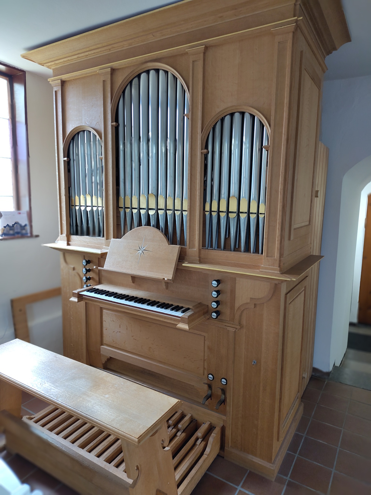
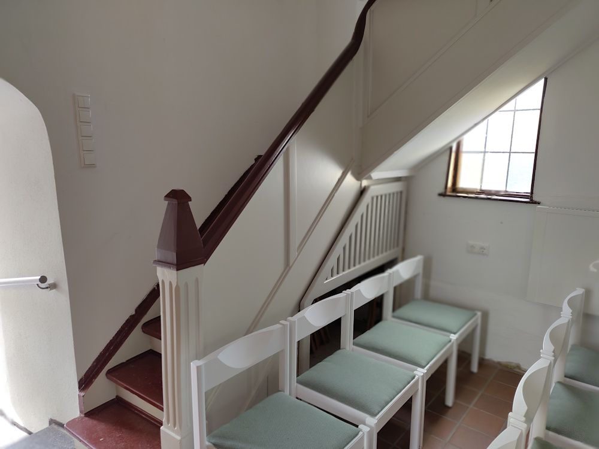
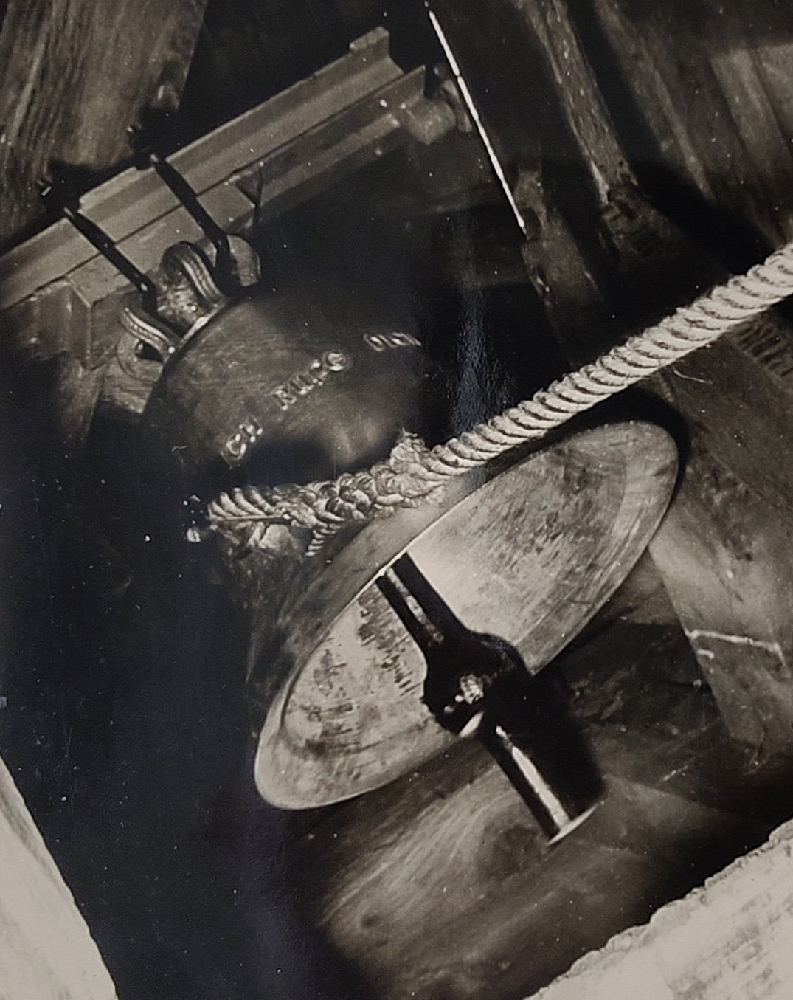
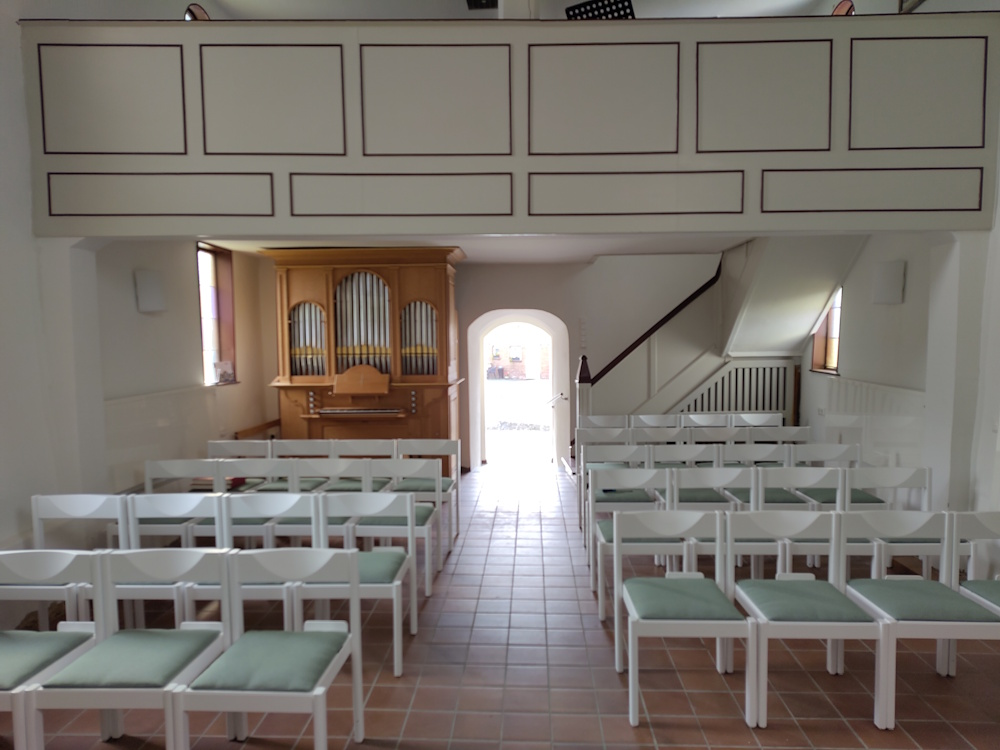
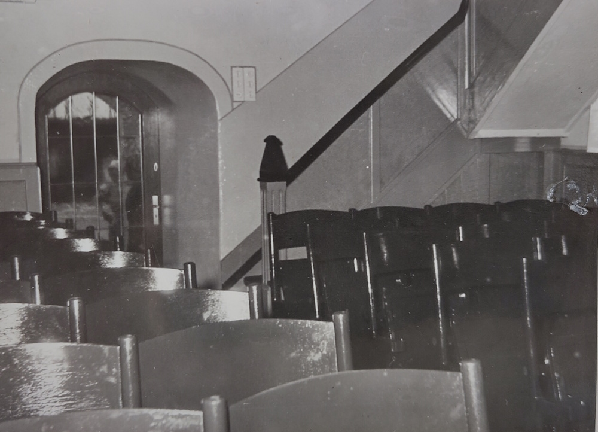
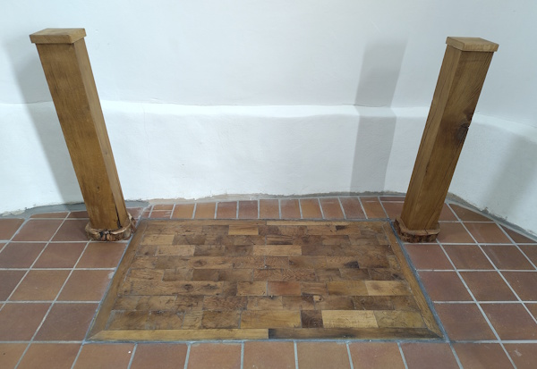
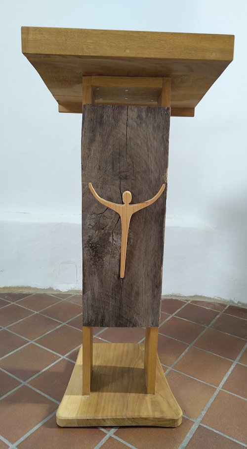

Sehens- und Wissenswertes
Giebelwand

Die steinerne Giebelwand ist mindestens ein halbes Jahrtausend alt und steht unter Denkmalschutz. Ihre beeindruckende Stärke wird besonders deutlich beim Betreten durch den kleinen Vorbau.

Orgel

Die Orgel weist für die Kirchengröße einige Besonderheiten auf: sie zeichnet sich durch eine aufwendige Mechanik aus, darunter eine Oktavkoppel, und sie hat eine kunstvolle Intarsienarbeit. Von der Orgelbauwerkstatt Rotenburg wurde sie als Meisterstück gefertigt.
Empore

Eine denkmalgeschützte Holztreppe führt zur Empore, die ursprünglich ein Harmoniumpodest war und später erweitert wurde. Heute dient sie auch als Schlafplatz für Gäste.
Glocke

Die Glocke trägt die Inschrift „ICH RUFE DICH“. Sie wurde 1956 neu gegossen, weil die Tonart der alten Glocke nicht zum Geläut der katholischen Kirche passte. Seither ermöglicht sie ein harmonisches Zusammenspiel der Konfessionen.
Kirchenschiff

Bei der jüngsten Sanierung wurde das Innere freundlicher und heller gestaltet. Die alten dunklen Holzverkleidungen wurden entfernt, Stühle und Empore weiß gestrichen.
Fun Fact

Als 1955 die als abbruchreif geltende Kapelle saniert wurde, wurden die unbequemen Kirchenbänke durch die Bestuhlung eines Kinos ersetzt. Saniert wurde weitgehend ehrenamtlich - da war dieser Gelegenheitskauf bei knappen finanziellen Mitteln eine clevere Lösung.
Chorraum

Bei der jüngsten Sanierung wurde die Kanzel entfernt und die Lücke von Manfred Neef mit eine Bodenplatte aus alten Fachwerkbalken gefüllt. Auch die anderen Elemente im Chor entstammen seiner Arbeit .

Außengelände
Früher befand sich um die Kappelle vermutlich ein Friedhof. 1912 stieß man hier auf gut erhaltene Sargbretter, Schädel und Gebeine.
Geschichte
Die Kapelle wurde erstmals 1530 erwähnt. Ihre Ursprünge reichen vermutlich noch weiter zurück, denn Anzhausen liegt an einer alten Pilger- und Handelsstraße, die Hessen mit dem Rheinland verband.
Während Reformation und Gegenreformation wechselte sie mehrfach die Konfession. Etwa ab dem Westfälischen Frieden 1648 wurde sie von beiden Konfessionen gemeinsam genutzt.
Im 18. Jahrhundert wurde das baufällig gewordene steinerne Kirchenschiff durch einen Fachwerkbau ersetzt, wobei die Giebelwand erhalten blieb.
1956 wurde die Kapelle nach umfangreicher, weitgehend ehrenamtlicher Renovierung als evangelische Kapelle neu eingeweiht. Die katholischen Christen hatten 1954 eine eigene Kapelle errichtet, womit das Simultaneum offiziell endete.
In jüngerer Zeit wurde die Kirche vollständig saniert und umgestaltet, so dass sie heute auch Pilgern und Radwandernden als Unterkunft und Ort der Ruhe zur Verfügung steht.